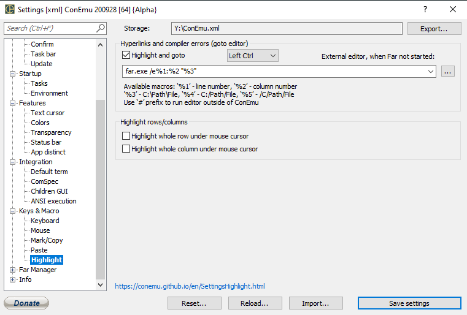

Highlight and goto
External editor, when Far not started
Command line for starting editor with file (%3) positioned on line (%1) and column (%2)
Hightlight whole row under mouse cursor
Hightlight whole column under mouse cursor